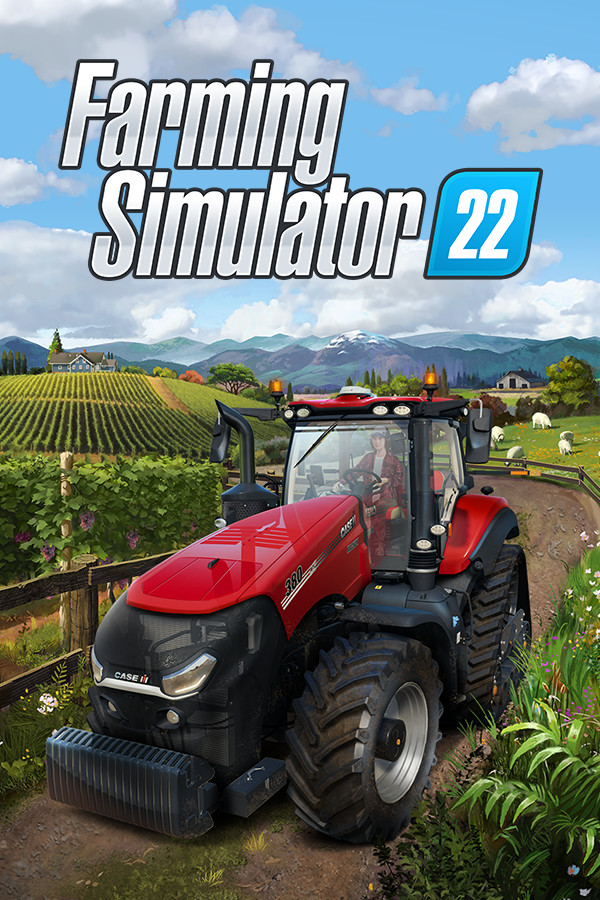

Farming Simulator 22
Farming Simulator 22
Details
|  | |
| Playtime | Not Played |
| Last Activity | Never |
| Added | 10/5/2023 17:05:40 |
| Modified | 7/14/2025 16:35:48 |
| Completion Status | Not Interested |
| Library | PlayStation |
| Source | PlayStation |
| Platform | Sony PlayStation 5 |
| Release Date | 11/21/2021 |
| Community Score | 89 |
| Critic Score | 75 |
| User Score | |
| Genre | Simulation |
| Developer | Giants Software |
| Publisher | Giants Software |
| Feature | Achievements Cloud Saves Co-Op Cross-Platform Multiplayer Full Controller Support Multi-Player Online Co-Op Remote Play On TV Single-Player Trading Cards |
| Links | Community Hub Discussions Guides News Store Page PCGamingWiki Achievements |
| Tag | PlayStation Plus |
Description
Take on the role of a modern farmer! Agriculture, animal husbandry and forestry offer a huge variety of farming activities while you face the challenges of the four seasons, especially when winter sets in. Creatively build your own farm and extend your farming operations with production chains - forming an agricultural empire! Even run your farm together with friends and enjoy crossplatform multiplayer together.
Whether you create a lush vineyard or an olive orchard in the Mediterranean south of France, a vast farmland full of wheat, corn, potatoes and cotton in the US-Midwest or a lively animal farm in the hilly landscape of the European Alpine region: More than 400 machines and tools from over 100 real agricultural brands like Case IH, CLAAS, Fendt, John Deere, Massey Ferguson, New Holland, Valtra and many more are available for your farm.
Farming Simulator 22 brings a multitude of new gameplay features and offers more content and player freedom than ever before, including new ground working features like mulching or stone picking, an improved build-mode adding greenhouses and beehives, as well as a new character creator to bring your own, individual farmer to life.
A large variety of free community-created modifications, officially tested by the developer GIANTS Software, will extend your farming experience many times over. Rise to the challenges of becoming a successful farmer, start farming and let the good times grow!
Whether you create a lush vineyard or an olive orchard in the Mediterranean south of France, a vast farmland full of wheat, corn, potatoes and cotton in the US-Midwest or a lively animal farm in the hilly landscape of the European Alpine region: More than 400 machines and tools from over 100 real agricultural brands like Case IH, CLAAS, Fendt, John Deere, Massey Ferguson, New Holland, Valtra and many more are available for your farm.
Farming Simulator 22 brings a multitude of new gameplay features and offers more content and player freedom than ever before, including new ground working features like mulching or stone picking, an improved build-mode adding greenhouses and beehives, as well as a new character creator to bring your own, individual farmer to life.
A large variety of free community-created modifications, officially tested by the developer GIANTS Software, will extend your farming experience many times over. Rise to the challenges of becoming a successful farmer, start farming and let the good times grow!